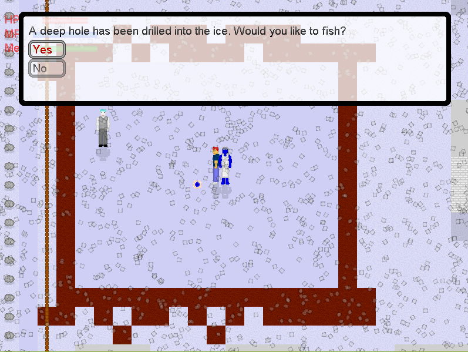
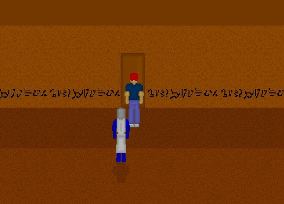
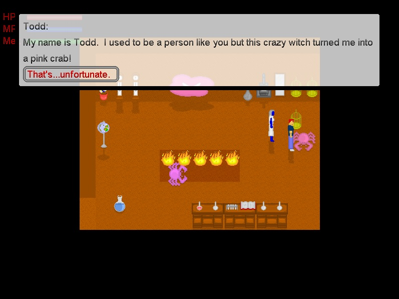

Discover a vast new world as you help Moosie and Bleu uncover the mystery of why everyone in your hometown has
vanished.

Explore intricate dungeons crawling with enemies and challenges.

Meet quirky characters all across the map as you slowly work to uncover the truth.